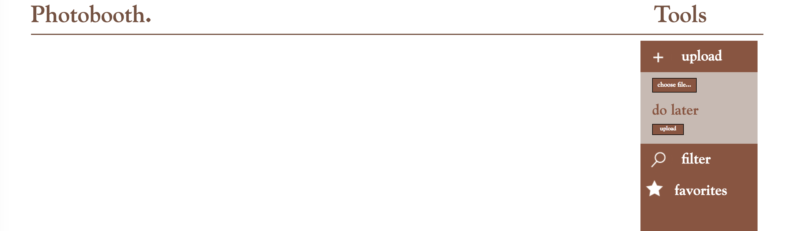
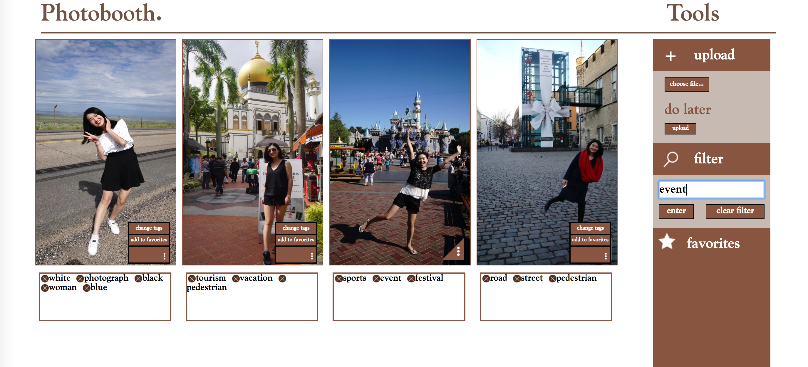

Photobooth
Technology: Javascript, Nodejs, CSS and SQL
In this project user can upload their photos and add some tags for those photos. Also user can filter photos by tags and make appear their favriate only. All those photos will store in server and all tags will store in database. After user upload the photo I will use GOOGLE API to analysis the photo and give some tags for the user. user can delete anyone thay don't need. Here is show the images when I use it.
Some images when I use this webpage:
Here is the first time when you use this one
Here is after you uploaded some images and all those images will store at database
More details about this project
First part of implementation:
In this first assignment, we will get images uploaded and displayed, and allow the user to add and delete labels and pick favorites, but we will not get the automatic labels (the cool part) or implement the filtering by labels or favorites. Of course, feel free to move on to that part if you want!See the lecture from 5/12 for uploading files. I would start with this example, and then display only the image that was just uploaded, just to get started. Notice that since the image is uploaded to /public, you can just use the image's URL on the server as its "src" property.
Getting the image to display while it is uploading is, suprisingly, harder! Here's an example of showing an image loaded from a file dialog, and fading it out: fader.html, fader.js, fader.cssNext, work on the browser code for adding labels and deleting labels. Send each label to the server as an AJAX request; see the lecture from 5/10. You can make up your own code for how to communicate from the browser to the server, using queries. For instance, maybe "delete label 'ice cream' from image 'picnicDay.jpg'" would produce the URL 138.68.25.50:????/change?img=picnicDay.jpg&label=ice%20cream&op=delete. Don't do anything on the server yet, except successfully parse the queries and respond the the HTTP requests.On the server, set up a database to contain the names of all the photos, their labels, and their "favorite" tags. We'll be using the Node SQLite3 module.
The database should have just one table, with each row storing the name of an image file (text), a string containing its labels, separated by commas (text), and a flag indicating whether it is a favorite or not (integer, 0 or 1). The file name should be the primary key.Now get the data into the database; when the user uploads an image make a new row in the database, when the user adds a label add it to label string, and when the user deletes a label, take it out of the label string, and when they "favorite" or "unfavorite" an image, change the integer value for "favorite".Now let's go back to the app. When it comes up, it should immediately show all the images in the database, with the labels under each image. To get them, you'll have to make an AJAX query to the server, and have the server dump the whole database, and send the data down to the browser as a JSON string in the body of the response object.
Second part of implementation
Recall that because of the Same Origin Policy, we need to access the GCV API from the server. So the sequence of operations (some of which you've already done) should be:User selects a file to upload, and hits the "upload" button.Button function on browsers puts together POST request and sends to server.Server gets POST request and directs file to public directory.At end of upload (in the "end" event handler), server puts together a PUT request to the GCV API, with a link to the photo and requesting "label Detection".
Server gets response from API and runs callback function. In the callback ("APIcallback"), the server should add the new labels to the database, and also put the labels into the response to send back to the browser. Browser gets response, and displays the labels. Other functions to implement for the final product: Splash page. Filtering by label, and turning filter on and off.